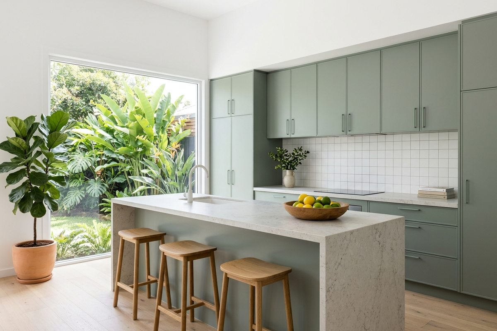
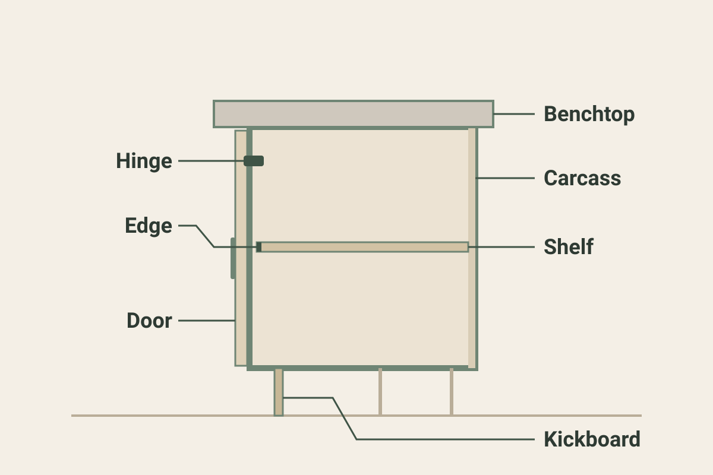

Kitchens on the Gold Coast: Custom Cabinets, Benchtops and Design
What to decide, what it tends to cost, and what to check before you agree to a new kitchen on the Gold Coast.

A new kitchen is mostly a set of decisions: the layout, what the cabinets are made of, what the benchtop is, and who does each part. This page sets out those decisions, the price ranges others have published for Gold Coast kitchens, and the questions worth asking, so the quotes you collect are quotes for the same job.
Kitchen design and layout
The layout drives most of the quote. Keeping the sink, cooktop and fridge where they are is a smaller job than moving them, because moving services means more trades and more work behind the walls. Ask each cabinet maker to quote against the same layout, or to say clearly where theirs differs.
Ask for a drawing of the proposed kitchen before you agree to anything. It is much cheaper to change a line on paper than a cabinet that has been made. If your plans include an island bench, a butler's pantry or opening the kitchen to the living area, have each one drawn, because each changes how much cabinetry the job needs.
Most kitchens are one of a few shapes: a single-wall kitchen along one wall, a galley with two facing runs, an L, a U, or any of these with an island. In a small kitchen the shape decides how much bench and cupboard space fits, so ask to see on the drawing where the storage goes. If the kitchen is in an apartment, say so in your enquiry, along with how the cabinets get in and whether the body corporate needs to approve the work.
Custom or flat-pack
Flat-pack kitchens arrive as standard-sized cabinets in cartons and are assembled and fitted from parts. Custom kitchens are made to the size of your room, so they fit awkward corners and unusual wall lengths without filler panels. Flat-pack can suit a room that works with standard sizes, and custom suits a room that does not.
Neither is better in every case. A cabinet maker can tell you which they would use for your room, and why.
Benchtops
The benchtop is a decision of its own: the material, the thickness, the edge, and the cut-outs for the sink and cooktop. Ask whether the quote includes the benchtop at all, and who is supplying and fitting it. Quotes that look different on price are sometimes the same job with the benchtop in one and out of the other.
What kitchen cabinets and cupboards are made of
Kitchens are damp places: steam from cooking, water at the sink, and the dishwasher beside it. It is worth asking what the cabinets are made of rather than assuming. Board makers sell moisture-resistant (MR) grades of melamine-faced particleboard, which they recommend for interior areas with high humidity, such as kitchen cupboards and vanities. Questions to put to the cabinet maker:
- What is the cabinet box made of, and is it a moisture-resistant grade?
- Are the cut and drilled edges sealed, including the edges that will not be seen?
- What are the hinges, runners and handles made of?
- Which cabinets sit under the sink or beside the dishwasher, and how is the material there protected?
Each of these is a question, not a rule. A good answer names a material and a method, and a vague answer is worth noticing.
The parts of a cabinet
A few terms come up in every quote. The diagram names them.

Outdoor kitchens
Outdoor kitchens on a deck or alfresco area are a different job from an indoor one, because the cabinets sit in the weather. If you want one, say so in your enquiry and ask the cabinet maker what they would build it from and how it is finished for outdoor use. Not every cabinet maker builds them.
What a kitchen costs on the Gold Coast
These are published price ranges for a kitchen renovation on the Gold Coast, from one independent cost-guide site and three Gold Coast renovation builders, read in October 2026. They are not our prices and not a quote. Each publisher defines its tiers differently, and a renovation figure usually includes work beyond the cabinets, such as demolition, plumbing, electrical and appliances. The cabinet maker who quotes your job prices it on your kitchen.
| Published by | Their tier | From | To |
|---|---|---|---|
| Cost-guide site | Cosmetic refresh (new door faces and paint) | $7,850 | $19,600 |
| Cost-guide site | Budget, with new cabinetry | $11,750 | $24,500 |
| Cost-guide site | Mid-range | $24,500 | $44,100 |
| Cost-guide site | Custom joinery, premium finishes | $44,100 | $78,400 |
| Renovation builder A | Budget | $15,000 | $25,000 |
| Renovation builder A | Mid-range | $25,000 | $45,000 |
| Renovation builder A | Premium | $45,000 | $80,000+ |
| Renovation builder B | Straight replacement, same layout | $25,000 | $40,000 |
| Renovation builder B | Custom joinery, larger island | $40,000 | $60,000 |
| Renovation builder B | Premium or open plan | $60,000 | $80,000 |
| Renovation builder C | Cosmetic refresh (doors, benchtop, splashback) | $15,000 | $30,000 |
| Renovation builder C | Mid-range, same layout | $35,000 | $55,000 |
| Renovation builder C | High-end, layout changes | $55,000 | $80,000 |
Three of the four put a mid-range Gold Coast kitchen at roughly $25,000 to $45,000, and all four top out around $78,000 to $80,000 or more for premium work. Builder C is higher at every tier and says its figures come from its own projects, including demolition, appliances, painting and project management. The lowest tier varies most, because one publisher counts only new door faces and paint, while another includes a new benchtop and splashback.
What moves a kitchen up or down these ranges is mostly what this page has covered: whether the layout stays, custom or flat-pack cabinets, the benchtop, and how much has to be removed and re-plumbed.
To have your kitchen priced, send an enquiry with its size, the layout and what is staying, and we pass it to a local cabinet maker who can quote it.
Sources: one independent cost-guide site (updated October 2026) and three Gold Coast renovation builders (published March to September 2026), each read on 20 October 2026. Published ranges change; this table is reviewed by October 2027.
Before you sign
Queensland has specific rules for building work, and they apply to many kitchen jobs. These are the points the building regulator, the QBCC, sets out.
A licence. Building work valued over $3,300 needs a QBCC licence. The QBCC has a Cabinet making licence class, which covers installing, refurbishing, restoring or repairing kitchen, bathroom, laundry and other fitted cabinets. Ask for the licence number before you agree to anything.
A written contract. For work over $3,300 the QBCC says a written, dated and signed contract is essential, and that the contract must include advice about your right to a cooling-off period.
The deposit. The most a contractor can ask for as a deposit depends on the price of the job. From $3,301 to $19,999 it is 10% of the contract price, and for more than $20,000 it is 5%. There is an exception of up to 20% where more than half the price is made-to-measure work done away from your home, and the QBCC gives made-to-measure kitchen cabinetry as an example.
Insurance. Queensland Home Warranty insurance applies to most residential building work valued over $3,300, counting materials, labour and GST. The QBCC lists replacing or refitting fixtures or fittings in a kitchen among the work it covers. Ask whether it applies to your job.
Sources: the Queensland Building and Construction Commission pages "Who must hold a QBCC licence" (reviewed 16 April 2026), "Cabinet making" (licence class), "Contracts and payments" (reviewed 14 May 2026), "Deposits and progress payments" (reviewed 27 June 2025) and "What work requires insurance" (reviewed 1 August 2024), at qbcc.qld.gov.au. Rules and figures change, so check the QBCC pages for the current position.
How long it takes
This page does not give a timeframe, because we have not found one from a source we can stand behind, and the figures builders publish disagree. What helps is asking each cabinet maker for a written timeline that shows how long the cabinets and benchtop take to make, as well as how long the work in your home takes. A short on-site time can sit after a much longer wait for the cabinets.
What to include when you enquire
- The size of the kitchen, and whether it is a straight run, an L, a U or has an island
- Whether you are keeping the layout or changing it
- Whether you want custom or flat-pack cabinets, or want advice
- What you would like the benchtop to be, if you have a view
- Whether the old kitchen needs removing, and whether appliances are staying
- Anything unusual about access, timing or the state of the walls and floor
You will not know all of it, and that is fine. A cabinet maker will want to see the room before pricing it properly.
If the job is wardrobes, a laundry or other joinery rather than a kitchen, see wardrobes and joinery. How this site works explains where your enquiry goes.
Common questions
What does a new kitchen cost on the Gold Coast?
Published ranges put a mid-range Gold Coast kitchen renovation at roughly $25,000 to $45,000, with premium work running to around $80,000 or more. Those are other publishers' figures, set out in the table above, not a quote. A cabinet maker prices your kitchen once they have seen the room.
Is $10,000 or $30,000 enough for a new kitchen?
On the published ranges above, $10,000 is inside one cost guide's cosmetic refresh range ($7,850 to $19,600, new door faces and paint) but below its budget range with new cabinetry, which starts at $11,750. $30,000 sits inside that guide's mid-range ($24,500 to $44,100), builder A's mid-range ($25,000 to $45,000) and builder B's straight replacement on the same layout ($25,000 to $40,000). These are other publishers' figures, not a quote.
Does the quote include the benchtop and installation?
Not always. Ask each cabinet maker to list what is included, and who supplies and fits the benchtop and any appliances.
Can I keep my existing cabinets and replace only the cupboard doors?
Sometimes. It depends on the condition of the cabinet boxes and whether the layout still works. Say so in your enquiry and the cabinet maker can tell you whether it is worth doing.
Should I pay a deposit?
A deposit is normal, and the QBCC sets a limit on it, set out under "Before you sign" above. A deposit above the limit is not something you have to pay.
Get a kitchen quote
Tell us the room, roughly how big it is, and what you want done. We pass it to a local cabinet maker who can quote it.
No spam and no obligation. Your details go to a local cabinet maker so they can quote your job, and the cabinet maker pays for the enquiry. We never add you to a marketing list. How we handle your information.
Ready to get started?
Call (07) 5651 3804 or send an enquiry online.
Get a kitchen quoteCall (07) 5651 3804